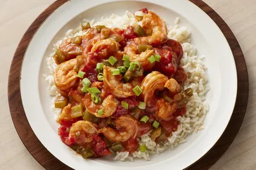

Shrimp Recipes

Déscription
Shrimp est un délicieux ragoût de fruits de mer, un classique de la Nouvelle-Orléans.
Il est facile à preparer et délicieux.
Ingrédients
- Beurre
- Légumes frais
- Assaisonnement
- Fécule de maïs
- Tomates en conserve
- Sauces
- Crevettes
- Jus de citron
Étapes
- Faites cuire les légumes hachés dans trois cuillères à soupe de beurre.
- Cette recette commence par la Sainte Trinité cajun (oignons, céleri et poivrons coupés en dés) cuits au beurre.
- Les crevettes créoles sont aromatisées avec de l'ail frais, des épices cajun, du piment en poudre et du thym frais (pour
la garniture).
- Épaississez la sauce avec deux cuillères à soupe de fécule de maïs.
- Il vous faudra une boîte de tomates mijotées et une boîte de sauce tomate.
- Au rayon des sauces, vous aurez besoin de sauce Worcestershire et de sauce piquante (comme le Tabasco).
- Une livre de crevettes moyennes (décortiquées et déveinées) permettra de préparer environ cinq portions de crevettes
créoles.
- Apportez de la fraîcheur avec une cuillère à soupe (facultative) de jus de citron.
Home